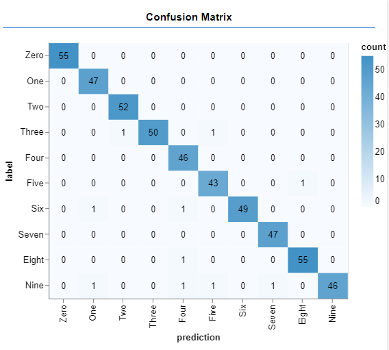

Hand Written Digits Machine Learning
A model is trained on labeled handwritten images and learns how to recognize new handwritten images containing digits.
The image data and labels are taken from the MNIST database and further processed in python to convert from grayscale to black and white.
There are 65000 images, however only 55000 are used for training the model and 10000 are used to calculate the accuracy.
Neural Network Model
 The neural network model takes in images containing 784 (28x28) bits of information.
The neural network model takes in images containing 784 (28x28) bits of information.
The first layer of the model (Conv2D1) creates a set of 8 filters that contains 25 nodes (5x5). Each filter is applied to the input data starting from the top left corner and then shifting 1 space until covering the entire image 24x24 times.
The second layer is a MaxPooling layer. It doesn't have any parameters. It takes 4 inputs from the first layer, finds the max, and outputs it. It only takes data from the first 2 dimensions for every instance of the 3rd dimension (seperate filters).
Applying another convolutional layer can find more refined features that exist between seperate parts of the image. For example a tail feature matching the circle part of a 9 which isn't recognized in the first layer's features because they aren't within 5 pixels.
After shrinking down the third layer with another maxpooling layer to 16 4x4 nodes. We flatten the dimensions from 4x4x16 to just 1 array of nodes and connect each node to each node of 10 possible outcomes (a total of 2570 trainable parameters).
Training Data
Examples of handwritten digits in black and white
Training The model
The model is trained by sending in batches of 500 images at a time. Each node in the model contains 2 parameters called weights and biases. They are adjusted according to the categorical crossentropy loss function to get a more accurate result.
Images are matched by sending in a batch of 500 labels (targets) which the model is trying to predict. These are used to determine the loss.
The loss determines how much to adjust the parameters, too little and the accuracy increases slowly, too much and the accuracy over shoots the local minima.
Testing The model

After training the model we test it on the reserverd 10000 images to see aproximately how well it will perform on real world data.